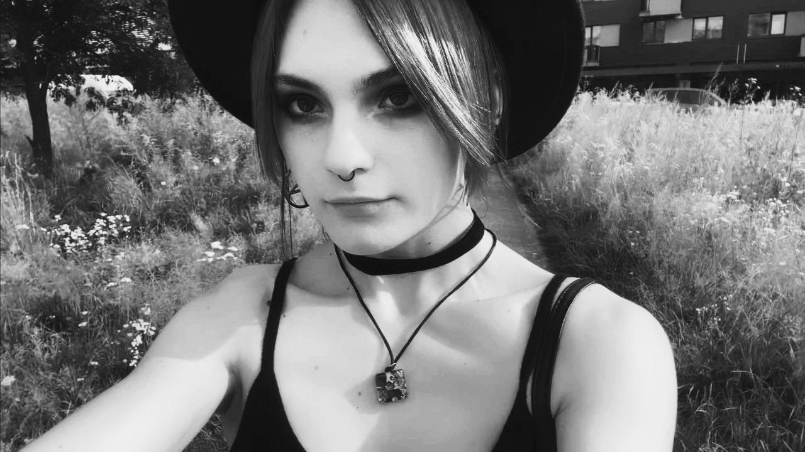

Хто така нен?

Мені 18 років, родом я з-під Львова, точніше з військового містечка Ковирі, тому більшість моїх родичів
військові.

Тільки тато та його сестра мали хист до малювання та музики, зокрема тітка навчалась в тому ж коледжі де я. Гадаю творчістю пішла в них, тому
деякі мої хоббі:
- малювання
- трохи грала на фортепіано та іноді опановую синтезатор
- фото на випадково знайдену стару цифрову камеру
- іноді шиття та в’язання невеликих речей
- колись тато набивав сам собі татуювання і також маю тату-машинку
- вчусь стрільби з професійного луку
- працювала барменом/офіціантом, тому роблю непогані коктейлі
Кілька фактів про мене:
- кілька років фарбуюсь в синій колір, скільки не пробувала інші кольори - завжди вертаюся до нього
- маю трохи східної крові, бабуся та дідусь родом з Узбекистану, мій тато також народився там у місті
Самарканд, мама етнічна українка, але народилась в Угорщині через постійні військові відрядження її батьків
- маю 8 татуювань, але планую збільшити їх кількість
- через деяку проблему з рукою в дитинстві частково стала амбідекстером, могла писати двома руками одночасно
та поодинці
- попри мій трохи нестандартний вигляд або як його називають бабусі під під‘їздом «сатанинський», паралельно
зі звичайною школою вчилась і закінчила на відмінно школу катихизму при храмі
- не маю зубів мудрості і в мене вони ніколи не виростуть
- трішки гадаю на картах таро
Ще одне моє головне хоббі це збирання гербарію і якихось шишок чи каштанів з різних лісів чи міст. Кілька прикладів
на фото зверху.